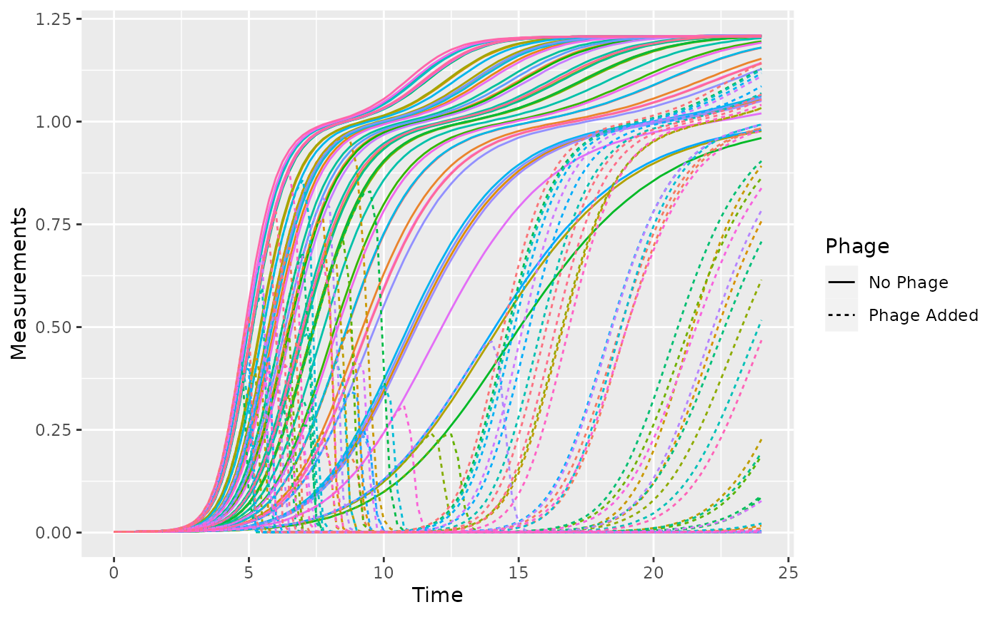

Introduction to using gcplyr
Mike Blazanin
gcplyr.RmdGetting started
gcplyr is a package that implements a number of
functions to make it easier to import, manipulate, and analyze bacterial
growth from data collected in multiwell plate readers (“growth curves”).
Without gcplyr, importing and analyzing plate reader data
can be a complicated process that has to be tailored for each
experiment, requiring many lines of code. With gcplyr many
of those steps are now just a single line of code.
This document gives an introduction of how to use
gcplyr’s most common functions, and points you to
additional documents for more in-depth explanations of each common steps
of a growth curve analysis with gcplyr.
To get started, all you need is the data file with the growth curve measures saved in a tabular format (.csv, .xls, or .xlsx) to your computer.
Users often want to combine their data with some information on experimental design elements of their growth curve plate(s). For instance, this might include which strains went into which wells. You can save this information into a tabular file as well (see [Reading design elements from files]), or you can just keep it handy to enter it directly through a function later on (see [Generating designs in R]).
Let’s get started by loading gcplyr. We’re also going to
load a couple other packages we’ll need.
library(gcplyr)
#> ##
#> ## gcplyr (Version 0.12.1, Build Date: 2023-01-22)
#> ## See http://github.com/mikeblazanin/gcplyr for additional documentation
#> ## Please cite software as:
#> ## Blazanin, Michael. 2023. 'gcplyr: manipulate and analyze growth
#> ## curve data.' R package version 0.12.1
#> ##
library(dplyr)
#>
#> Attaching package: 'dplyr'
#> The following objects are masked from 'package:stats':
#>
#> filter, lag
#> The following objects are masked from 'package:base':
#>
#> intersect, setdiff, setequal, union
library(ggplot2)A quick demo of gcplyr
Before digging into the details of the various options that
gcplyr provides to users, here’s a simple example of what a
final gcplyr script can look like. This script imports data
from files created by a plate reader, combines it with design files
created by the user, then calculates the maximum density and
area-under-the-curve. Don’t worry about understanding all the
details of how the code works right now. Each of these steps is
explained in depth in later documents. Here, we’re just providing a
demonstration of what analyzing growth curve data with
gcplyr can look like.
#Read in our data
# (our plate reader data is saved in "widedata.csv")
data_wide <- read_wides(files = "widedata.csv")
#Transform our data to be tidy-shaped
data_tidy <-
trans_wide_to_tidy(wides = data_wide, id_cols = c("file", "Time"))
#Import our designs
# (saved in the files Bacteria_strain.csv and Phage.csv)
designs <- import_blockdesigns(files = c("Bacteria_strain.csv", "Phage.csv"))
#Merge our designs and data
data_merged <- merge_dfs(data_tidy, designs)
#> Joining, by = "Well"
#Plot the data
ggplot(data = data_merged,
aes(x = as.numeric(Time), y = Measurements, color = Well)) +
geom_line(aes(lty = Phage)) +
guides(color = "none")
#Voila! 8 lines of code and all your data is imported & plotted!
#Calculate two common metrics of bacterial growth:
# the maximum density, saving it to a column named 'maxdens'
# the area-under-the-curve, saving it to a column named 'auc'
data_sum <- summarize(
group_by(data_merged, Well, Bacteria_strain, Phage),
maxdens = max(Measurements, na.rm = TRUE),
auc = auc(y = Measurements, x = as.numeric(Time)))
#> `summarise()` has grouped output by 'Well', 'Bacteria_strain'. You can override
#> using the `.groups` argument.
#Print some of the max densities and auc's
head(data_sum)
#> # A tibble: 6 × 5
#> # Groups: Well, Bacteria_strain [6]
#> Well Bacteria_strain Phage maxdens auc
#> <chr> <chr> <chr> <dbl> <dbl>
#> 1 A1 Strain 1 No Phage 1.18 57433.
#> 2 A10 Strain 4 Phage Added 0.999 20403.
#> 3 A11 Strain 5 Phage Added 0.984 21812.
#> 4 A12 Strain 6 Phage Added 0.189 1652.
#> 5 A2 Strain 2 No Phage 1.25 69537.
#> 6 A3 Strain 3 No Phage 1.15 54776.
#Plot the results for max density and area under the curve in presence vs absence of phage
ggplot(data = data_sum,
aes(x = auc, y = maxdens, color = Phage)) +
geom_point()What’s next?
Now that you’ve read this brief introduction, you probably want to
get into a little more detail learning how to use gcplyr
for your own work. Generally, working with gcplyr will
follow a number of steps. In your final script, each of these steps is
likely to be only one or a few lines of code. We’ve broken down each of
these steps in a document:
- Introduction
- Importing and transforming data
- Incorporating design information
- Pre-processing and plotting your data
- Processing your data
- Analyzing your data
- Statistics, merging other data, and other resources